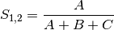

Matrix Transformations¶
EcoPy makes it easy to prep matrices for analysis. It assumes that all matrices have observations as rows (i.e. sites) and descriptors as columns (i.e. species). Although designed for site x species analyses, these techniques can apply to any matrix.
- tranform()
- distance()
- transform(x, method='wisconsin', axis=1, breakNA=True)¶
Takes an input matrix, performs a transformation, and returns an output matrix. It will accept with pandas.DataFrame or numpy.ndarray, and will return an object of the same class. Matrices consist of i rows and k columns.
Parameters
- x: a numpy.ndarray or pandas.DataFrame (required)
- A site x species matrix, where sites are rows and columns are species.
- method: [‘total’ | ‘max’ | ‘normalize’, ‘range’, ‘standardize’, ‘hellinger’, ‘log’, ‘logp1’, ‘pa’, ‘wisconsin’]
total: Divides each observation by row or column sum.
max: Divides each observation by row or column max.
normalize: Chord transformation, also euclidean normalization, making the length of each row or column 1.
range: Converts the range of the data to 0 and 1.
standardize: Standardizes each observation (i.e. z-score).
hellinger: Square-root of the total transformation.
log: Returns ln(x+1)
logp1: Returns ln(x) + 1, if x > 0. Otherwise returns 0.
pa: Converts data to binary absence (0) presence (1) data.
wisconsin: First divides an observation by the max of the column, then the sum of the row. That is, it applies ‘max’ down columns then ‘total’ across rows.
- axis: [0 | 1]
- Axis for the transformation
- breakNA: [True | False]
- Whether NA values should halt the transformation
Example
Convert the ‘varespec’ data to relative abundance:
import pandas.rpy.common as com import ecopy as ep varespec = com.load_data('varespec', 'vegan') relAbund = ep.transform(varespec, method='total', axis=1)
- distance(x, method='euclidean', transform="1", breakNA=True)¶
Takes an input matrix and returns a square-symmetric array of distances among rows. NOTE: Be sure the appropriate transformation has already been applied. This function contains a variety of both similarity (S) and distance (D) metrics. However, for consistency all similarities are converted to distances D = 1 - S. Methods annotated with SIMILARITY follow this procedure.
In the case of binary 0/1 data, the two rows are converted to a contingency table, where A is the number of double presences, B and C are the number of single presences in
 and :math`x_2`, respectively, and D is the number of double absences. Matrices consist of i rows and k species. Methods that only work on binary data will result in an error if non-binary data is passed. However, binary data can be passed to all methods, and sometimes give equivalent results (i.e. passing binary data to method ‘bray’ is identical to using method ‘sorensen’).
and :math`x_2`, respectively, and D is the number of double absences. Matrices consist of i rows and k species. Methods that only work on binary data will result in an error if non-binary data is passed. However, binary data can be passed to all methods, and sometimes give equivalent results (i.e. passing binary data to method ‘bray’ is identical to using method ‘sorensen’).Parameters
- x: a numpy.ndarray or pandas.DataFrame (required)
- A site x species matrix, where sites are rows and columns are species.
- method: [‘euclidean’ | ‘chord’ | ‘manhattan’ | ‘meanChar’ | ‘whittaker’ | ‘canberra’ | ‘hellinger’ | ‘mod_gower’ | ‘bray’ | ‘kulcznski’ | ‘gower’ | ‘simple’ | ‘rogers’ | ‘sokal’ | ‘jaccard’ | ‘sorensen’]
Note, some methods do not allow negative values.
euclidean: Calculates euclidean distance between rows.
chord: Euclidean distance of normalized rows.
manhattahn: ‘City-block’ distance
meanChar: Czekanowski’s mean character difference, where M is the number of columns.
whittaker: Whittaker’s index of association. Rows are first standardized by row totals (if the transformation as already been applied above, this will not affect it as row totals will equal 1)
canberra: Canberra metric
hellinger: Hellinger distance. This is the same as ‘chord’, but square-root transformed first.
mod_gower: Modified Gower distance. This is the same as ‘meanChar’, except M is the number of columns that are not double zero. This discounts double-absences from the ‘meanChar’ method.
bray: Bray-Curtis percentage dissimilarity coefficient
kulcznski: Kulcznski’s coefficient (SIMILARITY)
gower: Gower asymmetrical coefficient (SIMILARITY)
The denominator is the maximum of column k minus the minimum of column k in the entire matrix. Double zeroes are excluded in this calculation.
simple: simple matching of BINARY data (SIMILARITY)
rogers: Rogers and Tanimoto coefficient for BINARY data (SIMILARITY)
sokal: Sokal and Sneath coefficient for BINARY data (SIMILARITY)
jaccard: Jaccard’s coefficient for BINARY data (SIMILARITY)

sorensen: Sorensen’s coefficient for BINARY data (SIMILARITY)
- transform: [“1” | “sqrt”]
- Determines the final transformation of the distance metric. “1” returns the raw distance D. “sqrt” returns sqrt(D). Sometimes sqrt(D) has more desirable properties, depending on the subsequent analyses (see Legendre and Legendre - Numerical Ecology).
- breakNA: [True | False]
- Whether null values should halt the process
Examples
Calculate the Bray-Curtis dissimilarity among rows of the ‘varespec’ data:
import pandas.rpy.common as com import ecopy as ep varespec = com.load_data('varespec', 'vegan') brayDist = ep.distance(varespec, method='bray)If attempting a binary method with non-binary data, an error will be raise:
jacDist = ep.transform(varespec, method='jaccard') >>ValueError: For method jaccard, data must be binary varespec2 = ep.transform(varespec, method='pa') jacDist = distance(varespec2, method='jaccard')